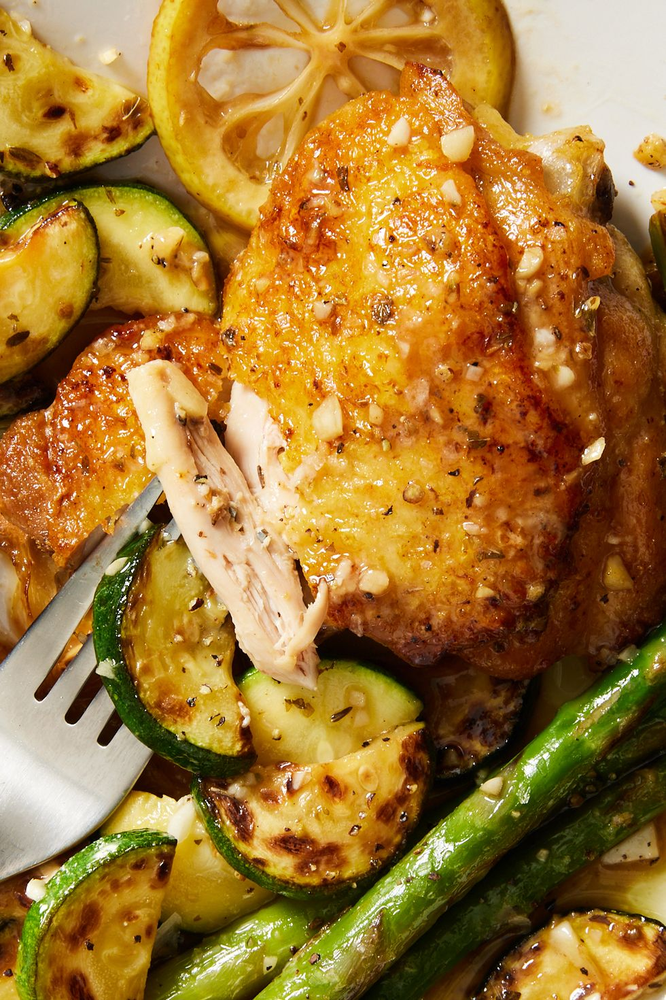

Chicken Alfredo Recipes

this chicken Alfredo recipe is a beginner-friendly dish that truly anyone can master
cheesy sauce and tender chicken breasts, it's the pasta dish we turn to time and time
again when we're craving the ultimate comfort meal
it might just become a new go-to weeknight dinner for all you non-Uticans out there.
Ingredients
- 2 tbsp. extra-virgin olive oil
- 2 boneless skinless chicken breasts
- Kosher salt
- Freshly ground black pepper
- 2 c. whole milk
- 2 c. low-sodium chicken broth
- 2 cloves garlic, minced
- 8 oz. fettuccine
- 1/2 c. heavy cream
- 1 c. freshly grated Parmesan
- Freshly chopped parsley, for garnish
Recipe instructions (taken from the book)
- In a large skillet over medium-high heat, heat oil. Add chicken
and season with salt and pepper. Cook until golden and cooked through,
8 minutes per side. Let rest 10 minutes, then slice.
- Add milk, broth, and garlic to skillet. Season with salt and pepper and bring to a simmer.
Add fettuccine, stirring frequently for
about 3 minutes. Let cook until al dente, 8 minutes more. .
- Stir in heavy cream and Parmesan until combined. Simmer until sauce thickens.
- Remove from heat and stir in sliced chicken. Garnish with parsley.